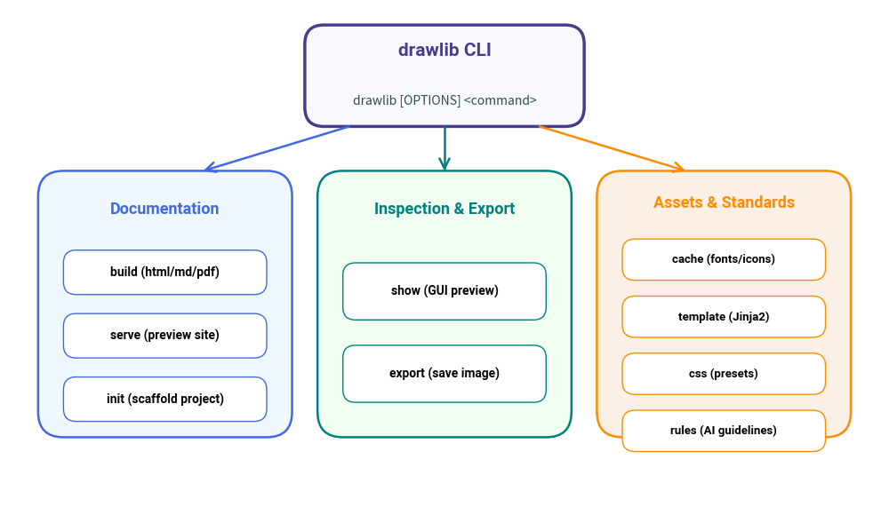

CLI Overview & Global Options
Drawlib provides a comprehensive command line interface (drawlib) built on Python and Typer. It manages document builds, asset downloads, template inspection, development previewing, and AI coding agent guidelines.
1. Invoking the CLI
When Drawlib is installed in your Python environment or virtual environment via pip or uv, the drawlib executable is available globally:
drawlib --help
Alternatively, you can run the module directly through Python:
python -m drawlib --help
2. Command Hierarchy
The CLI is organized into specialized subcommands:
| Command | Purpose | Key Subcommands & Options |
|---|---|---|
build |
Compiles documents or drawing scripts into images, Markdown, HTML, or PDF. | image, markdown, html, pdf |
serve |
Launches a local HTTP development server for live previewing. | --port, --check, --no-browser |
init |
Scaffolds starter projects with templates. | simple, site, pdf, --here |
show |
Executes and renders a specific illustration block in a GUI viewer or file. | --grid, --output, --config |
export |
Headless extraction and export of a diagram directly to an image file. | --output, --grid, --config |
cache |
Manages local caches for dynamic release assets (fonts and icons). | clear, list, download |
template |
Manages built-in Jinja2 templates for HTML and PDF output. | html, pdf, export, validate |
css |
Manages built-in CSS stylesheets. | html, pdf, export |
rules |
Displays drawing guidelines and architectural rules for AI agents. | show, build, topics, list |

3. Global Options
These options apply across all drawlib subcommands:
| Option | Flag | Description |
|---|---|---|
--version |
-v |
Displays the installed software and API version and exits. |
--verbose |
Enables verbose logging output (logging level DEBUG). |
|
--debug |
Alias for --verbose. |
|
--quiet |
Suppresses informational messages, displaying only errors. | |
--developer |
Enables verbose logging and disables user-facing error suppression, showing raw Python tracebacks. | |
--help |
-h |
Displays help message and command syntax. |
4. Next Steps
drawlib build: Compile Markdown and Python scripts to production targets.drawlib serve: Host documentation locally with automated asset integrity validation.drawlib init: Bootstrap starter projects.drawlib show&export: Interactive previewing and single-block rendering.drawlib cache& Assets: Manage font and icon caches.drawlib rules: AI agent rules and API reference manuals.
© 2026 drawlib by Yuichi Ito. Released under the Apache 2.0 License.